More Covariance Functions
Nugget Covariance
\[ Cov(y_{t_i}, y_{t_j}) = \sigma^2 {1}_{\{h=0\}} \text{ where } h = |t_i - t_j|\]
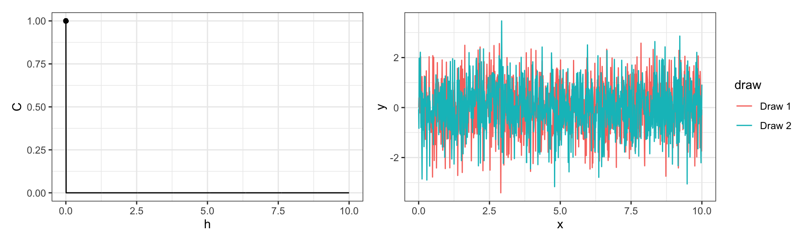
(- / Power / Square) Exponential Covariance
\[ Cov(y_{t_i}, y_{t_j}) = \sigma^2\exp\left(-(h\,l)^p\right) \text{ where } h = |t_i - t_j|\]
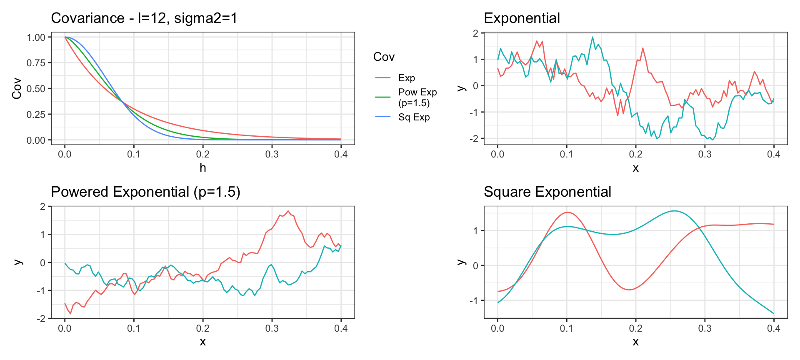
Matern Covariance
\[ Cov(y_{t_i}, y_{t_j}) = \sigma^2 ~ \frac{2^{1-\nu}}{\Gamma(\nu)} ~ \left(\sqrt{2\nu}\, h \cdot l\right)^\nu ~ K_\nu\left(\sqrt{2\nu} \, h \cdot l\right) \text{ where } h = |t_i - t_j|\]
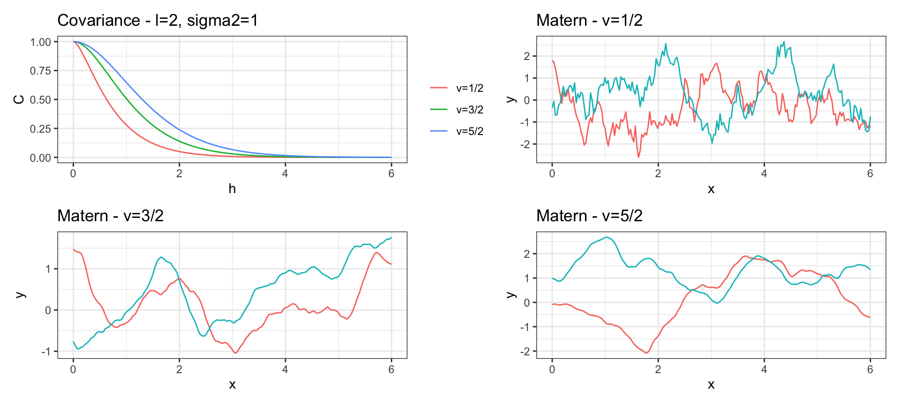
Matern Covariance
\(K_\nu()\) is the modified Bessel function of the second kind.
A Gaussian process with Matérn covariance has sample functions that are \(\lceil \nu -1\rceil\) times differentiable.
When \(\nu = 1/2 + p\) for \(p \in \mathbb{N}^+\) then the Matern has a simplified form
When \(\nu = 1/2\) the Matern is equivalent to the exponential covariance.
As \(\nu \to \infty\) the Matern converges to the squared exponential covariance.
Rational Quadratic Covariance
\[ Cov(y_{t_i}, y_{t_j}) = \sigma^2 \left(1 + \frac{h^2 \, l^2}{\alpha}\right)^{-\alpha} \text{ where } h = |t_i - t_j|\]
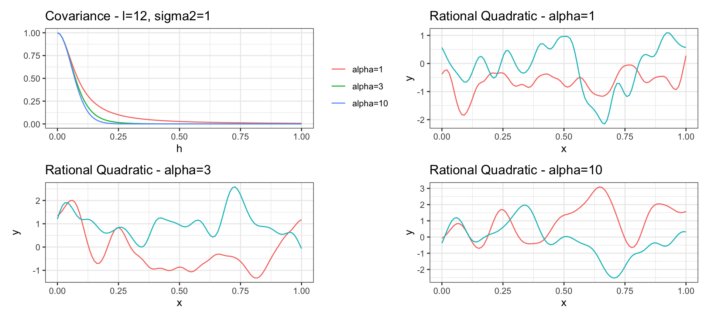
Rational Quadratic Covariance
is a scaled mixture of squared exponential covariance functions with different characteristic length-scales (\(l\)).
As \(\alpha \to \infty\) the rational quadratic converges to the square exponential covariance.
Has sample functions that are infinitely differentiable for any value of \(\alpha\)
Spherical Covariance
\[ Cov(y_{t_i}, y_{t_j}) = \begin{cases}
\sigma^2\left(1 - \frac{3}{2} h \cdot l + \frac{1}{2} (h \cdot l)^3)\right) & \text{if } 0 < h < 1/l \\
0 & \text{otherwise}
\end{cases} \text{ where } h = |t_i - t_j|\]
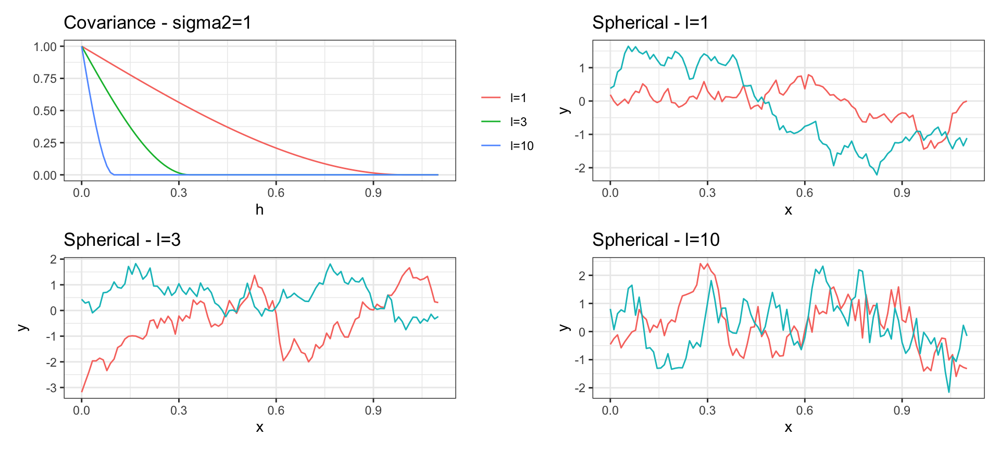
Periodic Covariance
\[ Cov(y_{t_i}, y_{t_j}) = \sigma^2 \exp\left(-2\, l^2 \sin^2\left(\pi\frac{h}{p}\right)\right) \text{ where } h = |t_i - t_j| \]
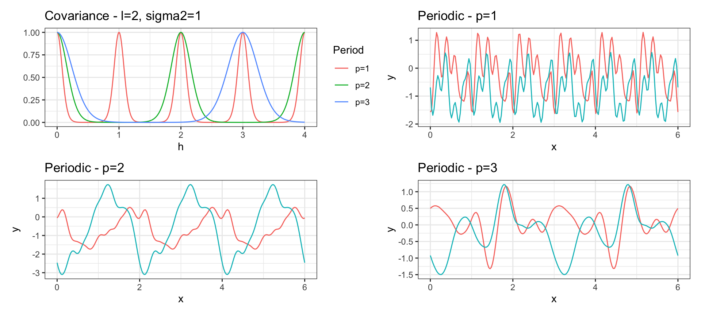
Linear Covariance
\[ Cov(y_{t_i}, y_{t_j}) = \sigma^2_b + \sigma^2_v~(t_i-c)(t_j-c)\]
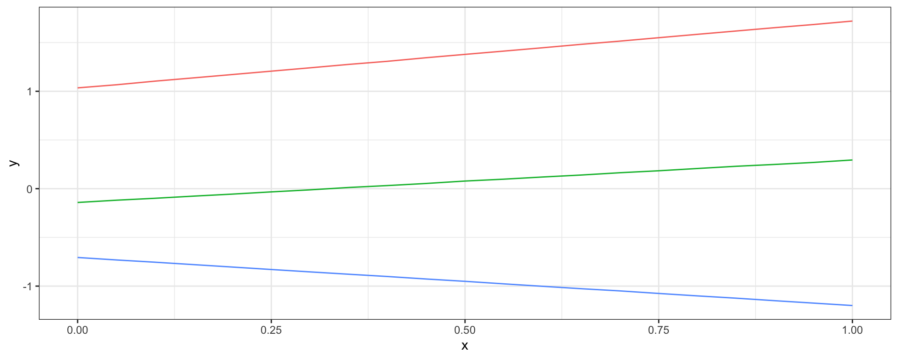
Combining Covariances
If we definite two valid covariance functions, \(Cov_a(y_{t_i}, y_{t_j})\) and \(Cov_b(y_{t_i}, y_{t_j})\) then the following are also valid covariance functions,
\[
\begin{aligned}
Cov_a(y_{t_i}, y_{t_j}) + Cov_b(y_{t_i}, y_{t_j}) \\
\\
Cov_a(y_{t_i}, y_{t_j}) \times Cov_b(y_{t_i}, y_{t_j})
\end{aligned}
\]
Linear \(\times\) Linear \(\to\) Quadratic
\[ Cov_a(y_{t_i}, y_{t_j}) = 1 + 2~(t_i \times t_j) \] \[ Cov_b(y_{t_i}, y_{t_j}) = 2 + 1~(t_i \times t_j) \]
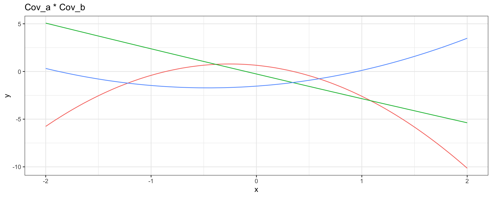
Linear \(\times\) Periodic
\[ Cov_a(y_{t_i}, y_{t_j}) = 1 + 1~(t_i \times t_j) \] \[ Cov_b(y_{t_i}, y_{t_j}) = \exp\left(-2\, \sin^2\left(2\pi\,h\right)\right) \]
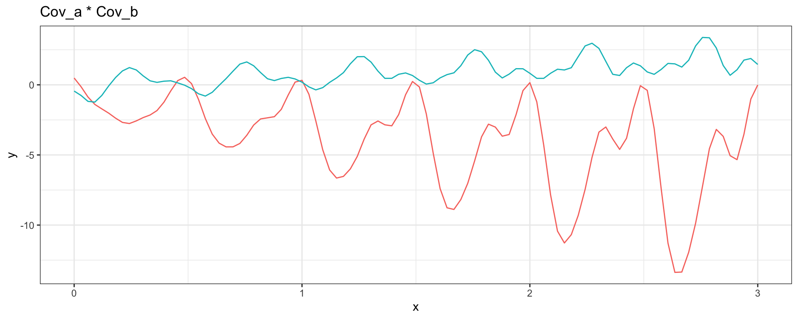
Linear + Periodic
\[ Cov_a(y_{t_i}, y_{t_j}) = 1 + 1~(t_i \times t_j) \] \[ Cov_b(h = |t_i - t_j|) = \exp\left(-2\, \sin^2\left(2\pi\,h\right)\right) \]
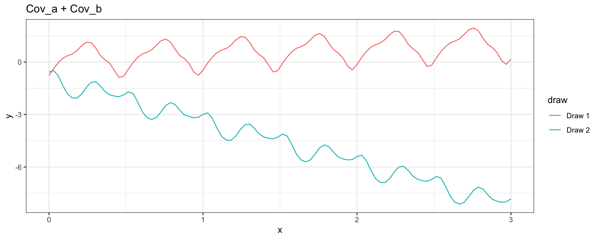
Sq Exp \(\times\) Periodic \(\to\) Locally Periodic
\[ Cov_a(h = |t_i - t_j|) =\exp(-(1/3)h^2) \] \[ Cov_b(h = |t_i - t_j|) = \exp\left(-2\, \sin^2\left(\pi\,h\right)\right) \]
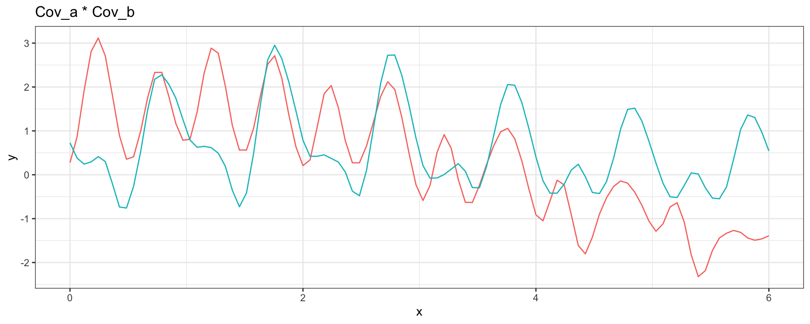
Sq Exp (short) + Sq Exp (long)
\[ Cov_a(h = |t_i - t_j|) = (1/4) \exp(-4\sqrt{3}h^2) \] \[ Cov_b(h = |t_i - t_j|) = \exp(-(\sqrt{3}/2)h^2) \]
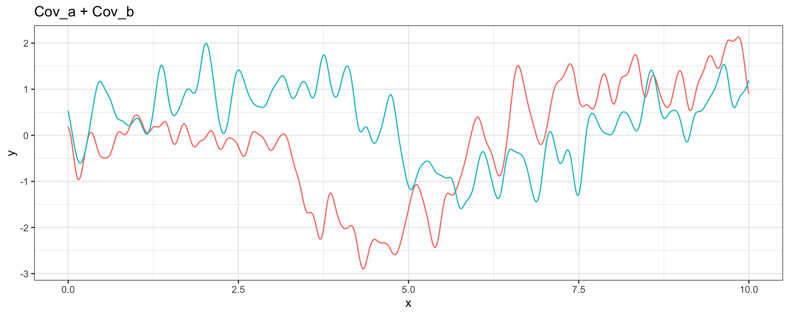
Births (one year)
Smooth long term trend
(sq exp cov)
Seven day periodic trend with decay (periodic x sq exp cov)
Constant mean
Component Contributions
We can view our GP in the following ways (marginal form),
\[ \boldsymbol{y} \sim N(\boldsymbol{\mu},~ \boldsymbol{\Sigma}_1 + \boldsymbol{\Sigma}_2 + \sigma^2 \boldsymbol{I}\,) \]
but with appropriate conditioning we can also think of \(\boldsymbol{y}\) as being the sum of multiple independent GPs (latent form)
\[ \boldsymbol{y} = \boldsymbol{\mu} + w_1(\boldsymbol{t}) + w_2(\boldsymbol{t}) + w_3(\boldsymbol{t})\] where \[
\begin{aligned}
w_1(\boldsymbol{t}) &\sim N(0, \boldsymbol{\Sigma}_1) \\
w_2(\boldsymbol{t}) &\sim N(0, \boldsymbol{\Sigma}_2) \\
w_3(\boldsymbol{t}) &\sim N(0, \sigma^2 \boldsymbol{I}\,)
\end{aligned}
\]
Decomposition of Covariance Components
\[
\begin{bmatrix}
y \\
w_1 \\
w_2
\end{bmatrix}
\sim N \left(
\begin{bmatrix}
\boldsymbol{\mu} \\ 0 \\ 0
\end{bmatrix},~
\begin{bmatrix}
\Sigma_1 + \Sigma_2 + \sigma^2 \boldsymbol{I} & \Sigma_1 & \Sigma_2 \\
\Sigma_1 & \Sigma_1 & 0\\
\Sigma_2 & 0 & \Sigma_2 \\
\end{bmatrix}
\right)
\]
therefore
\[ w_1 ~|~ \boldsymbol{y},\boldsymbol{\mu},\boldsymbol{\theta} \sim N(\boldsymbol{\mu}_{cond},~ \boldsymbol{\Sigma}_{cond}) \]
\[ \boldsymbol{\mu}_{cond} = 0 + \Sigma_1 ~ (\Sigma_1 + \Sigma_2 + \sigma^2 I)^{-1}(\boldsymbol{y}-\boldsymbol{\mu}) \] \[ \boldsymbol{\Sigma}_{cond} = \Sigma_1 - \Sigma_1 (\Sigma_1 + \Sigma_2 + \sigma^2 \boldsymbol{I})^{-1} {\Sigma_1}^t \]
Births (multiple years)
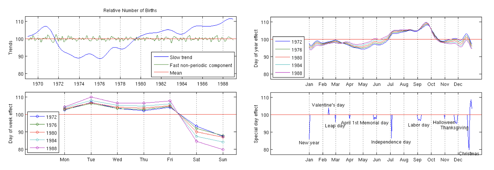
Full stan case study here with code here
slowly changing trend - yearly (sq exp cov)
small time scale trend - monthly (sq exp cov)
7 day periodic - day of week effect (periodic \(\times\) sq exp cov)
365.25 day periodic - day of year effect (periodic \(\times\) sq exp cov)
special days and interaction with weekends (linear cov)
independent Gaussian noise (nugget cov)
constant mean